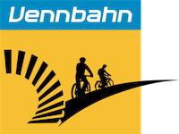
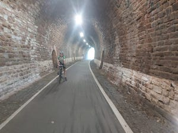
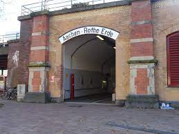

<!--Main layout-->
<main class="vennbahngrijs">
    <div class="container">

        <div class="row">
            <div class="col-md-12 pt-5">
                <h2>Maastricht - Sankt Vith</h2>
                <h5>Etappe 1 - 135 KM</h5>

            </div>
        </div>

        <div class="row">
            <div class="col-md-8 pt-5">
                <h4>De route</h4>
                Een groot deel van de eerste route gaat over de
                <a href="https://www.vennbahn.eu/nl/" target="_blank">Vennbahn</a>.
                De Vennbahn is een oud treinspoor en volledig omgebouwd tot fietspad. De vennbahn loopt door 3 verschillende landen en is 125 kilometer lang.
            </div>
            <div class="col-md-4 pt-5">
             
            </div>
        </div>

        <div class="row">
            <div class="col-md-4 pt-5">
              
            </div>
            <div class="col-md-8 pt-5">
                De Vennbahn is een van de gemakkelijkste en mooiste delen om te fietsen.
                Het is mooi geasfalteerd en nooit steiler dan 2%.<br>
                Je kunt hier ook prima een dagje naar toe om te fietsen.
                Het fietspad is bijna helemaal voor jezelf. Alleen in de buurt van Aachen kan het drukker zijn.  <br>
            </div>
        </div>

        <div class="row">
            <div class="col-md-8 pt-5">
                <h4>Waar moet je op letten</h4>
                    De start van de Vennbahn is moeilijk te vinden.
                    De start zit namelijk verstopt naast het treinstation
                    <a href="https://goo.gl/maps/9LGvmaJuTbdJNJSE6" target="_blank">Rothe Ende</a> in Aachen. <br> <br>

                    Let ook goed op bij de afslag naar Malmedy. Wij zijn hier zelf verkeerd gefiets en moesten <br> hierdoor 8 km. omfietsen.
                    <br> <br>
                    De Vennbahn heeft veel kruispunten met slalompoortjes. Door deze poortjes moet je veel afremmen en goed opletten dat er geen auto aankomt.
           </div>
           <div class="col-md-4 pt-5">
            
          </div>
       </div>


      <iframe src="https://www.google.com/maps/embed?pb=!1m50!1m12!1m3!1d36660.26146455965!2d6.1155891037601995!3d50.32517060006096!2m3!1f0!2f0!3f0!3m2!1i1024!2i768!4f13.1!4m35!3e1!4m5!1s0x47c09571d5c5502f%3A0xccecddcaded073aa!2sSchin%20op%20Geul!3m2!1d50.8537836!2d5.873265!4m3!3m2!1d50.7703263!2d6.1173262!4m3!3m2!1d50.7083462!2d6.184116899999999!4m3!3m2!1d50.6585776!2d6.1227734!4m3!3m2!1d50.6421256!2d6.2577644!4m3!3m2!1d50.5798293!2d6.239202!4m3!3m2!1d50.498072199999996!2d6.1747688!4m3!3m2!1d50.286615999999995!2d6.1292092!5e0!3m2!1snl!2snl!4v1662025988903!5m2!1snl!2snl"
       class="mt-5 mb-5" width="100%" height="600px" allowfullscreen="" loading="lazy" referrerpolicy="no-referrer-when-downgrade">

      </iframe>

      <script async src="https://pagead2.googlesyndication.com/pagead/js/adsbygoogle.js?client=ca-pub-8239777228243047"
     crossorigin="anonymous"></script>
    <!-- 1 -->
        <ins class="adsbygoogle"
            style="display:block"
             data-ad-client="ca-pub-8239777228243047"
                data-ad-slot="5702571326"
              data-ad-format="auto"
         data-full-width-responsive="true"></ins>
    <script>
     (adsbygoogle = window.adsbygoogle || []).push({});
    </script>
    <ng-adsense [adClient]="'ca-pub-8239777228243047'" [pageLevelAds]="true"></ng-adsense>


   </div>
  </main>
